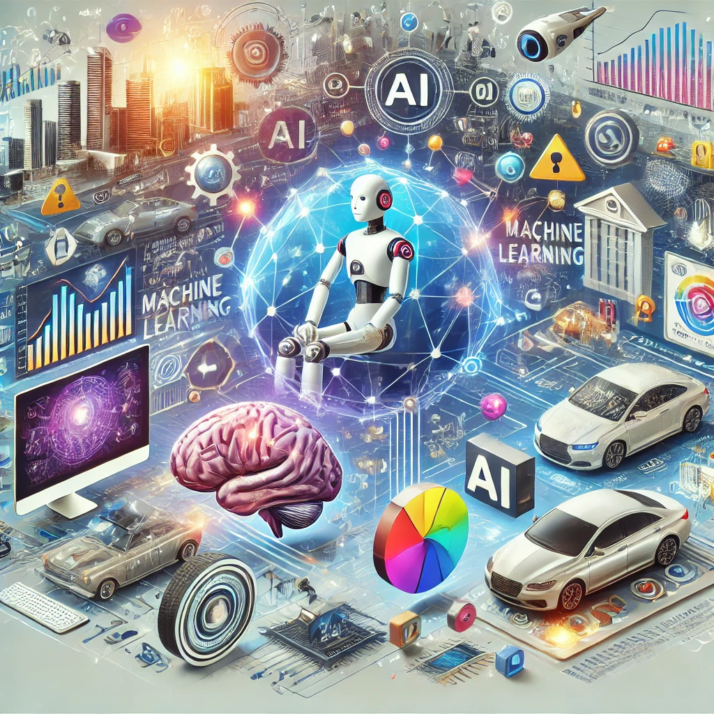
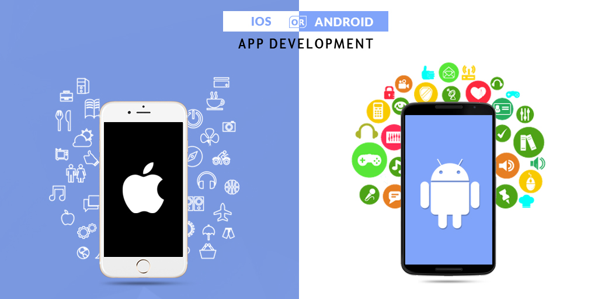
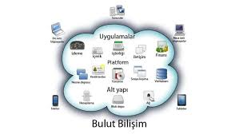
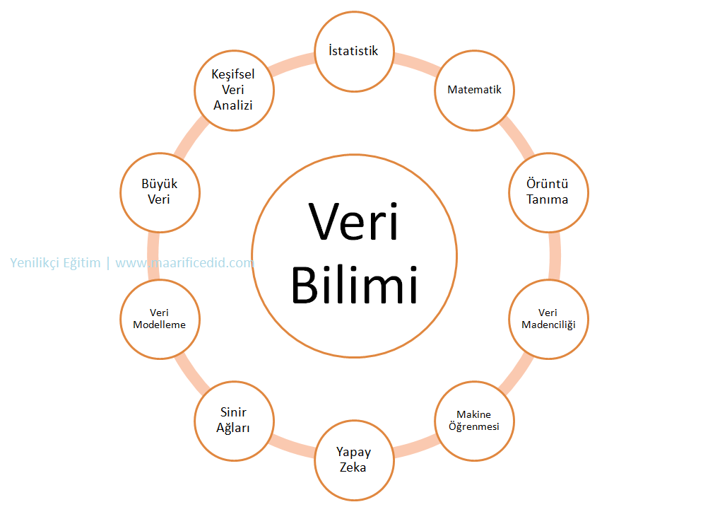
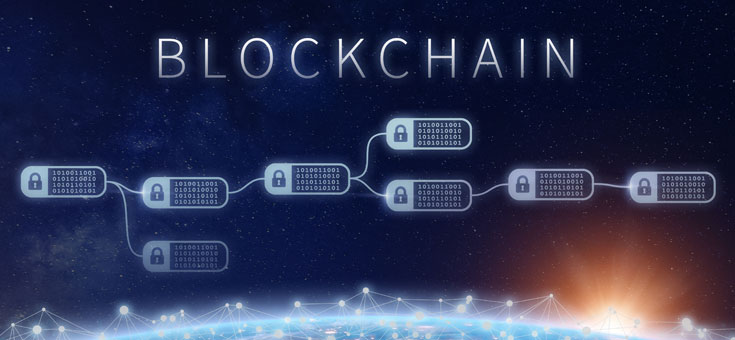
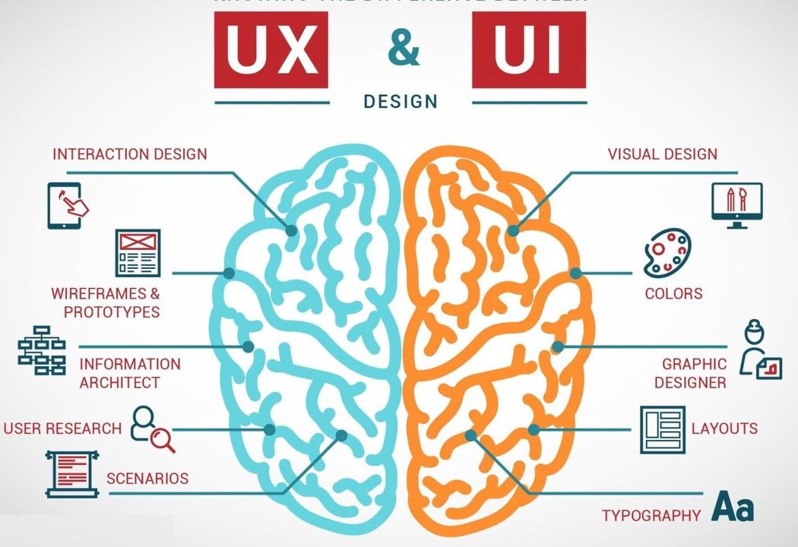
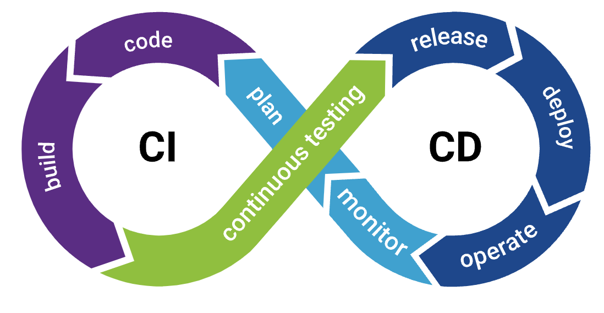
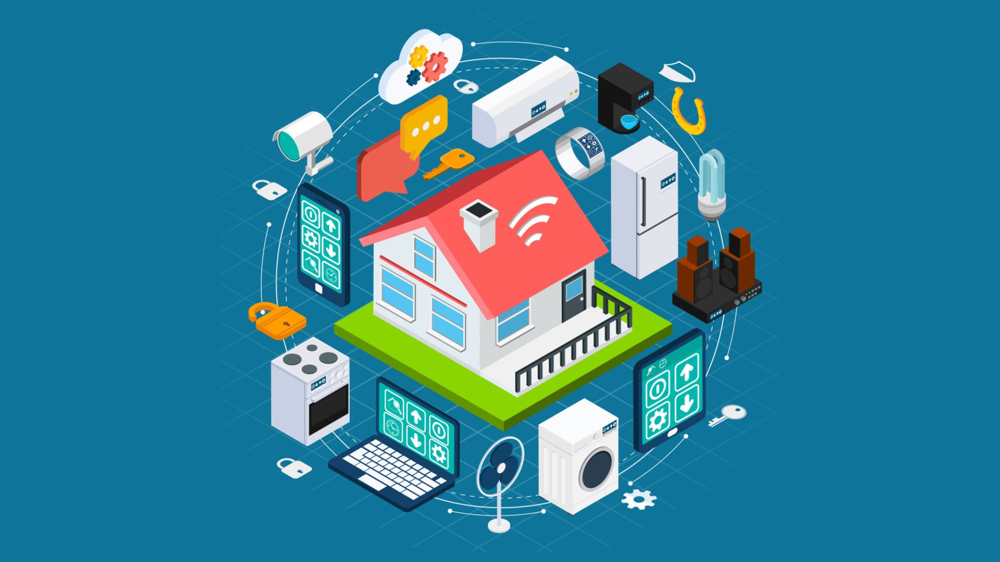
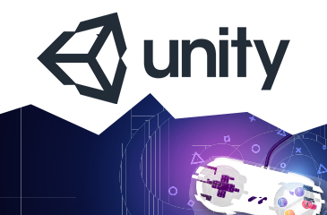
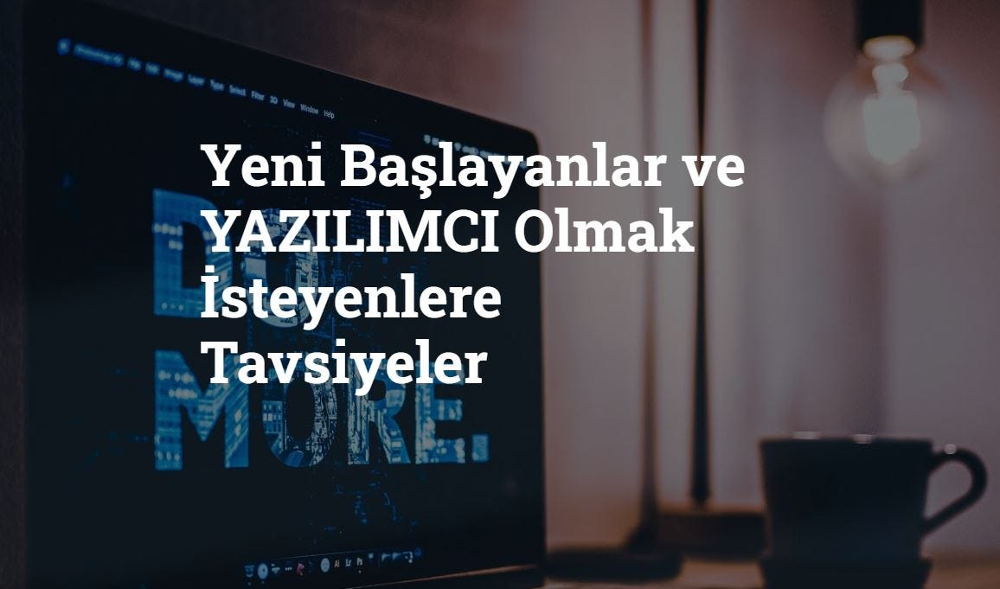

Full Stack Geliştirme: Yolculuk Başlıyor
Yazılım geliştirme dünyasında full stack geliştirme kavramını derinlemesine inceledik. Frontend ve backend teknolojilerinin entegrasyonu...
Devamını Oku →Yazılım, tasarım ve yapay zeka dünyasından en güncel içerikler, derinlemesine teknik incelemeler ve gelecek öngörüleri.
Yazılım geliştirme dünyasında full stack geliştirme kavramını derinlemesine inceledik. Frontend ve backend teknolojilerinin entegrasyonu...
Devamını Oku →
Günümüz teknolojisinde yapay zekanın yeri ve iş dünyasına etkileri. Makine öğrenmesi algoritmaları ve geleceğin trendleri...
Devamını Oku →Veri güvenliği çağında siber güvenliğin önemi. Phishing saldırıları, şifreleme algoritmaları ve korunma yolları...
Devamını Oku →
iOS ve Android platformlarında uygulama geliştirmenin avantajları ve dezavantajları. Native vs cross-platform karşılaştırması...
Devamını Oku →
Modern altyapıların vazgeçilmezi bulut bilişim. AWS servisleri ve sunucusuz mimari hakkında her şey...
Devamını Oku →
Büyük veri analizi ve Python ile veri bilimi kütüphaneleri. Pandas, Numpy ve Scikit-learn kullanımı...
Devamını Oku →
Merkeziyetsiz finans ve Web3 devrimi. Akıllı sözleşmeler ve Ethereum ekosistemine giriş...
Devamını Oku →
Kullanıcı deneyimini iyileştiren tasarım trendleri. Figma kullanımı ve responsive tasarımın püf noktaları...
Devamını Oku →
Docker ve Kubernetes ile uygulama dağıtım süreçlerini otomatikleştirme. Modern yazılım geliştirme döngüsü...
Devamını Oku →
Bağlantılı cihazlar dünyası ve IoT güvenliği. Akıllı şehirler ve endüstri 4.0 dönüşümü...
Devamını Oku →
Oyun dünyasına ilk adım. C# ve Unity motoru ile kendi oyununuzu tasarlamanın yolları...
Devamını Oku →
Yazılım dünyasına nereden başlamalı? Portfolyo oluşturma ve mülakat teknikleri hakkında rehber...
Devamını Oku →